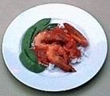

Garlic prawns
500 gm of raw green prawn meat 

lime and lemon juice
sprinkle of lemon pepper
mix all together an stand for 2 hours
3 freshly crushed garlic
2tablespoon of trident sweet chillie sauce.
3 spring onions sliced
1 tablespoon of olive oil
1teaspoon or two if cornflour
2teaspoon of tom paste
1\2 cup of water
pinch of salt
pinch of sugar
In heavy based saucepan heat the olive oil on high heat till hot.
Drain the green prawns of any juice and stirfrry in the hot oil. Careful not to burn yourself.[spoon the prawns in with a long handle spoon and cover with the splatter guard straight away,]
Stir fry the prawns in hot oil till they change colour.add crushed garlic and sweet chillie sauce. Turn down the temp and addspring onions cook for five minutes. Add the water mixed in with tom paste , cornflour salt and sugar. Stir and cover and take off the heat
It shouldn’t take you more that 5 or 6 minutes altogether to cook this.
Eat with bhujal bhaatand vegies.